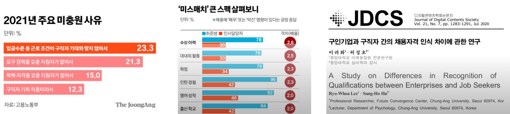
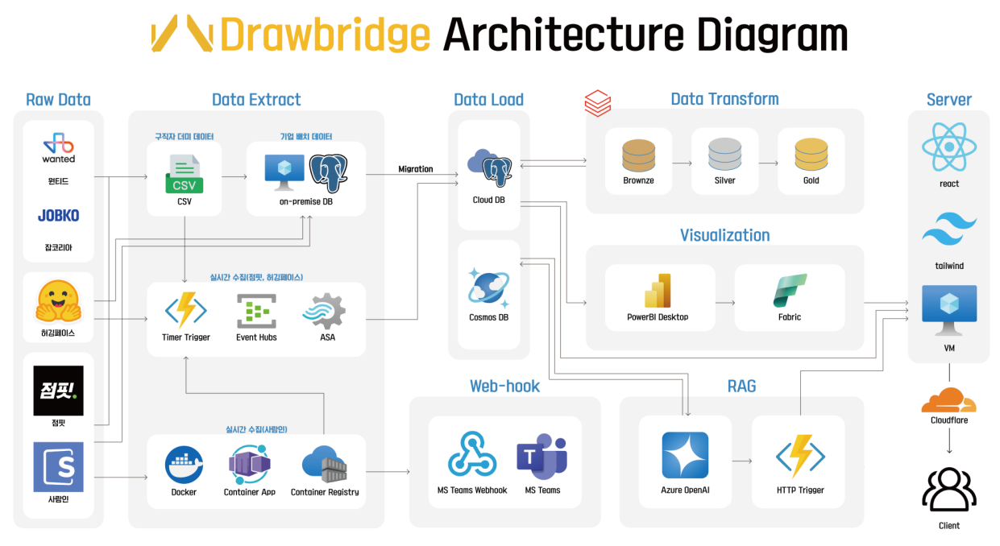
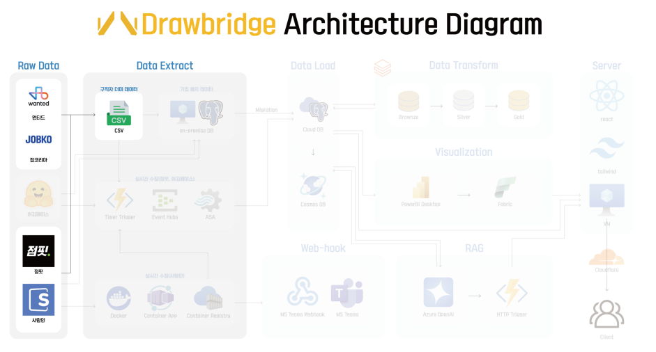
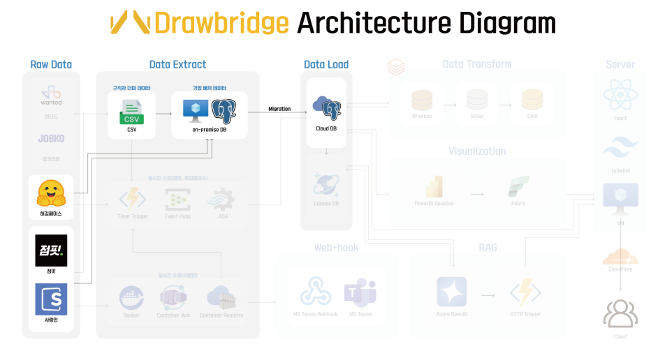
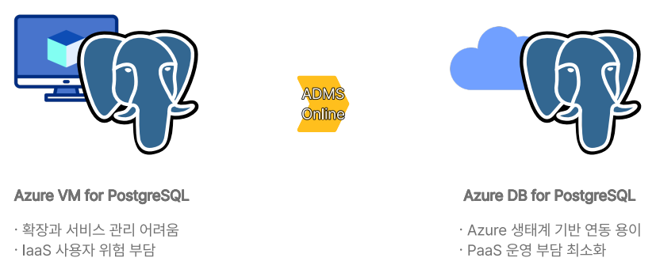
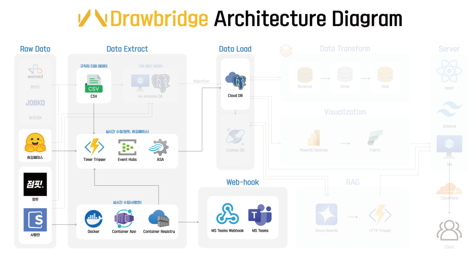
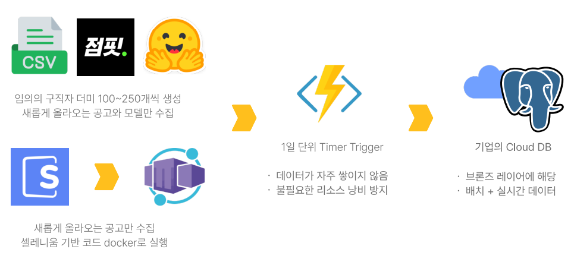
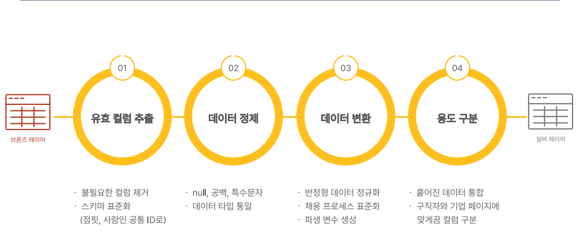
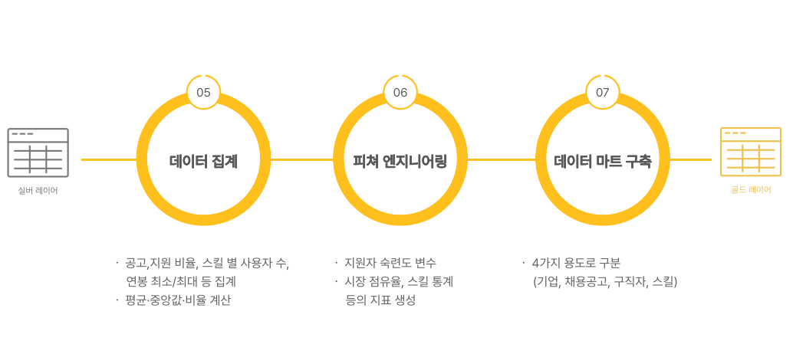

프로젝트 목표
- 기업의 구인난 · 구직자의 구직난을 완화 시킬 수 있는 점핏(사람인 계열사, IT 직군 채용 플랫폼)의 서비스 확장
프로젝트 배경
- 한국의 취업 시장은 구직난과 구인난이 동시에 존재하는 비정상적 구조
- 구직자와 기업의 인식과 기대치가 어긋나 서로를 제대로 이해하지 못하는 상황
- 채용 플랫폼의 기존 리소스를 활용해 두 집단의 간극을 메우는 서비스 Drawbridge 기획
프로젝트 필요성
- 구직자와 구인 기업 사이의 간극을 완화해 원활한 취업 흐름을 만드는 것이 핵심 목표
- 채용 공고와 구직자 데이터를 분석해, 구직자에게는 맞춤형 커리어 가이드 제공 / 기업에는 지원자 모니터링 및 공고 분석 기능 제공
- 양측이 현실적인 조건을 파악하고 전략을 세워 채용 효율성과 일치도를 높이는 구조

출처: 구인기업과 구직자 간의 채용자격 인식 차이에 관한 연구(이려화&허성호, 2020), www.joongang.co.kr/article/25271697
- 점핏 – 취업 시장 활성화와 서비스 가치 증대로 고객 및 영업 이익 상승
- 구직자 – 쉽고 효율적인 취업 준비, 이후 커리어 관리와 포트폴리오 활용 가능
- 기업 – 채용 리소스 절약과 더 적합한 인재 채용으로 효율성 향상
서비스 차별점
- 기존 주관적인 기술 스택 숙련도 평가 방식의 문제 → RAG를 활용해 객관적 숙련도 평가 시스템 구축
- 기존 플랫폼은 채용 공고를 단순히 나열하고 통계만 제공 → 채용 공고와 구직자 데이터를 분석해 기술 스택 트렌드와 현황을 시각화
- IT 직군의 핵심인 기술 역량이 충분히 반영되지 못하고 있음 → 구직자에게는 수요 기술 트렌드 가이드 / 기업에는 보유 기술 데이터 인사이트 제공
팀원 구성 및 역할
김시온
- 데이터 수집·분석
- Power BI 대시보드
- RAG 설계·구현
- 파이프라인 설계
김지민
- 데이터 수집
- 웹앱 개발
- RAG 구현
박형진
- 데이터 수집·분석
- 파이프라인 설계
송누림
- 데이터 수집·분석
- Power BI 대시보드
이민지
- 데이터 수집·분석
- Power BI 대시보드
전체 파이프라인

데이터 수집
1. 구직자 더미 데이터 생성
- 개인정보 이슈로 인해 실제 구직자 데이터를 수집할 수 없음
- 4개 채용 플랫폼(원티드, 잡코리아, 점핏, 사람인)과 정부 결제활동·성씨 통계, 전국 법정동 위치 API를 기반으로 분포 유지형 데이터 생성
- IPF를 활용하여 연령 · 성별 · 학력 관계 도출
- 가우시안 분포와 가중치를 통해 연령별 경력 생성
- 경제활동 인구 분포를 기반으로 근무지와 거주지 생성
- 원티드 데이터를 통해 직무 · 스킬 · 연봉 생성
- 최종적으로 10,000건 데이터 생성 (16개 정보 컬럼 + 12개 스킬 컬럼)
2. 채용 공고 및 기업 데이터 수집
- 사람인과 점핏의 크롤링 및 API 활용
- 공고 제목, 요구 기술 스택, 마감일 등 약 120개의 컬럼, 6개 테이블 구성
- 채용공고 5,308건, 기업 데이터 532건 수집
3. 허깅페이스 모델 데이터 수집
- 기술 트렌드 분석을 위해 허깅페이스에서 모델 2,083,155건을 수집하여 AI 기술 변화 추이를 파악
4. 클라우드 마이그레이션
 - 확장 서비스의 독립적 관리를 위해 클라우드로 마이그레이션 수행
- PaaS 환경으로 이전하여 운영 부담 최소화
- ADMS Online을 통한 자동화된 이전으로 관리 효율 향상
5. 실시간 데이터 수집
- 구직자 더미 데이터는 기존 분포를 기반으로 100~250개 랜덤 생성
- 공고 데이터는 점핏·사람인에서 새로 올라오는 공고만 수집
- 허깅페이스 모델 데이터는 새로 업데이트된 모델만 수집
- Azure Function App을 통해 매일 자동 실행, Event Hub와 ASA로 실시간 입력 및 적재
- 최종 데이터는 마이그레이션된 PostgreSQL에 저장
데이터 전처리 · 분석
- 전처리 및 분석은 ELT 방식으로 Azure PostgreSQL에 데이터를 저장하고 Databricks에서 메달리온 아키텍처(Medallion Architecture)에 따라 진행
1. 브론즈 레이어(Bronze Layer)
- 기존 PostgreSQL 데이터
2. 실버 레이어(Silver Layer)
- 유효 컬럼 추출: 불필요한 컬럼 제거, 스키마 표준화 (점핏·사람인 공통 ID 적용)
- 데이터 정제: null, 공백, 특수문자 처리 및 데이터 타입 포맷
- 데이터 변환: 반정형 데이터 정규화, 채용 프로세스 표준화, 파생 컬럼 생성
- 용도 구분: 흩어진 데이터 통합, 구직자와 기업 페이지 맞춤 컬럼 구분
3. 골드 레이어(Gold Layer)
- 데이터 집계: 공고·지원 비율, 스킬별 사용자 수, 연봉 최소/최대 등 집계, 평균/중앙값/비율 계산
- 피처 엔지니어링: 지원자 숙련도 변수, 시장 점유율, 스킬 통계 등 지표 생성
- 데이터 마트 구축: 4가지 용도별 구분 (기업, 채용공고, 구직자, 스킬)
RAG 구현
1. 문제 정의 및 필요성
- 기존 채용 플랫폼은 기본 스펙 및 단순 키워드 필터만 제공하며, 기술 스택 중심의 정량적 비교가 어려움
- 같은 기술을 다루더라도 이해도·숙련도의 차이가 존재하여 이를 검증하기 어려움
- 기업은 불필요한 서류·면접 리소스를 낭비하고, 구직자는 자신의 기술 숙련도에 대한 객관적 지표 부재
- 이에 따라 점핏은 기술 스택 기반 공고 탐색을 제공하고 있고, 더 나아가 기술 숙련도 진단 서비스를 제공
2. 데이터 파이프라인(Data Pipeline)
- 비정형 데이터를 활용한 RAG의 경우, Cosmos DB를 중심으로 구성
- Azure Open AI의 GPT-4.1-mini와 text-embedding-3-small 모델을 사용
- Azure Function App의 Timer Trigger를 통해 주기적으로 업데이트 수행
- 스킬 컨테이너: PostgreSQL 공고 스펙 컬럼을 정제해 중복 제거 후 Cosmos DB에 저장 (총 481개 스킬)
- 업데이트 주기: 데이터 변동성이 낮아 매월 1일 정각에 자동 업데이트
- 질문 컨테이너: 각 스킬에 대해 GPT가 전문성 있는 10개 질문을 생성하고 질문 컨테이너에 저장
- 질문 다양성을 위해 매주 1회 업데이트
- 답변 컨테이너: 질문 컨테이너의 각 질문에 대해 단계별 숙련도 높은 답변 10개를 생성
- 각 답변은 text-embedding-3-small 모델을 통해 벡터화되어 저장
- 업데이트 주기는 질문 컨테이너와 동일하게 매주 1회
- 숙련도 계산 API: Azure Function App의 HTTP Trigger를 통해 사용자의 답변을 입력받음
- 10개의 답변 벡터와 사용자의 답변 벡터 간 COS 유사도를 측정
- 상위 3개의 유사도에 가중치를 부여해 평균값으로 최종 숙련도 산출
3. 웹 동작(Web Operation)
- DrawBridge 웹사이트 내에서 구직자는 기술 숙련도 검사 기능을 이용 가능(로그인 → 기술 선택 → 질문 확인 및 답변 작성 → 결과 확인)
- 사용자가 작성한 답변은 API 형태로 변환되어 HTTP Trigger로 전송
- COS 유사도를 기반으로 계산된 숙련도가 UI에 시각화되어 표시됨
- 최종 결과는 별도의 유저 숙련도 DB에 저장되어 분석에 활용됨
4. 벡터 정책(Vector Policy)
- Distance Function: COS 유사도 — 벡터의 방향이 의미를 담으므로 적합
- Index Type: DiskANN — 대용량 데이터 확장을 고려한 고속 근사 검색 방식
서비스
서비스 1. AI 챗-봇
AI 챗-봇 서비스

- 기존 cosmos DB에 저장된 데이터를 벡터 임베딩하여 다른 컨테이너에 저장했습니다.
- Azure open ai에서 GPT-4.1-mini 모델을 사용하여 챗-봇을 구현했습니다.

- 사용자가 Static Web App의 UI에 질문을 입력하면 Azure Functions의 HTTP 트리거로 전달됩니다.
- 사용자의 질문을 text-embedding-3-small 모델로 벡터화하여 Cosmos DB에 저장된 벡터들과 cos 유사도 기반으로 검색합니다.

- 생성된 응답을 Azure Function에서 다시 Static Web App로 반환하여 사용자에게 응답 출력됩니다.


- 언어 다양성을 고려하여 다국어 지원을 구현했습니다.

- 다양한 디바이스 환경을 고려하여 반응형 웹 UI를 구현했습니다.


- Azure Speech SDK를 통해 브라우저에서 실시간 음성 인식(STT) 기능을 제공합니다.
서비스 2. 데이터 리포트(Power BI 대시보드)
메인 대시보드


- 다양한 디바이스 환경을 고려하여 컴퓨터, 스마트폰 환경에 맞게 구현했습니다.
출국 전 통합정보 페이지


- 사용자가 항공편을 검색하면 해당 항공편의 도착지 온도, 항공기 상태, 해당 국가 환율 등이 연동되어 한눈에 볼 수 있도록 제공됩니다.
- 시간이 부족하거나 빨리 수속을 하고 싶은 사람을 위한 터미널 별 출국장 혼잡도를 실시간으로 제공하여 보다 쾌적한 환경에서 수속을 마칠 수 있도록 돕습니다.
실시간 주차장 페이지


- 인천 공항의 규모가 크고 유동인구가 많은 만큼 주차에 시간이 많이 소모되고 스트레스 받는 일입니다. 이런 불편에 대응하고자 주차 구역별 주차 가능 공간, 주차장 혼잡도, 위치를 확인할 수 있습니다.
- 기간별 주차 가능 공간을 확인하여 출발 시간도 정할 수 있고, 각 구역별로 확인하고 공간이 많은 곳으로 유도할 수 있습니다.
다국어 서비스


- 공항은 이용 고객의 국적도 다양한 만큼 다양한 언어의 서비스를 제공합니다.
서비스 3. 공항 길찾기
메인 페이지

- 공항 내 상업시설 데이터와 kakao map api, T-map api를 통하여 공항 내, 외에서 길찾기 기능을 제공합니다.
공항 가는 길


- 현재 위치에서 인천공항까지 가는 길을 제공합니다.
- 현재 위치에서 거리, 실시간 소요 시간 확인이 가능합니다.
공항 내 안내


- 내 주변에 무엇이 있는지 빠르게 파악할 수 있습니다.
- T-map 보행자 경로 API로 클릭하여 실시간 경로를 제공합니다.
- 시설 위치, 거리, 도보 시간 등을 빠르게 파악할 수 있습니다.
서비스 4. 지연 항공 알림 서비스
지연 항공 알림

- 실시간 항공편 및 기상 데이터를 사용했습니다.
- Timer Trigger Function이 지연 항공편 데이터를 감지하여 Teams Webhook으로 실시간 알림을 전송합니다.

- 논리 앱(Logic APP)이 Teams에 메시지를 감지하여 Cosmos DB에 저장합니다.

- Static Web App에서 DB 데이터를 필터링하고 사용자에게 표 형식으로 시각화하여 제공합니다.
문제 상황 발생 및 해결
1. 데이터 구조 문제

문제: 각 테이블별로 의미체계를 만들어 가져올 경우 Power BI Direct Query가 비활성화됨 (현재 Power BI는 다중 의미체계 미지원)
해결: 모든 테이블을 1개의 테이블로 병합 후 Power BI 내부에서 테이블로 분할했습니다.

2. 데이터베이스 선택 문제

문제: 병합된 데이터를 저장할 DB 선택 (Azure Cosmos DB vs Azure SQL DB)

해결: 실시간성이 중요한 데이터와 서비스인 만큼, 처리 속도가 빠르고, 갑작스런 사용량 증가에 대한 대응성이 좋은 Cosmos DB를 선택했습니다.
기대 효과
- 데이터 기반 맞춤형 서비스 제공으로 공항 이용객의 불편함 해소 및 만족도 향상
- 실시간 데이터와 AI 챗봇을 활용하여 정보 접근성을 높이고, 공항 이용 경험을 혁신적으로 개선
- 개인화된 페르소나 분석을 통해 사용자 맞춤형 서비스를 제공함으로써 서비스의 효율성과 가치 증대
- 실시간 주차장, 혼잡도 등 유용한 정보를 제공하여 공항 운영 효율성 증대에도 기여